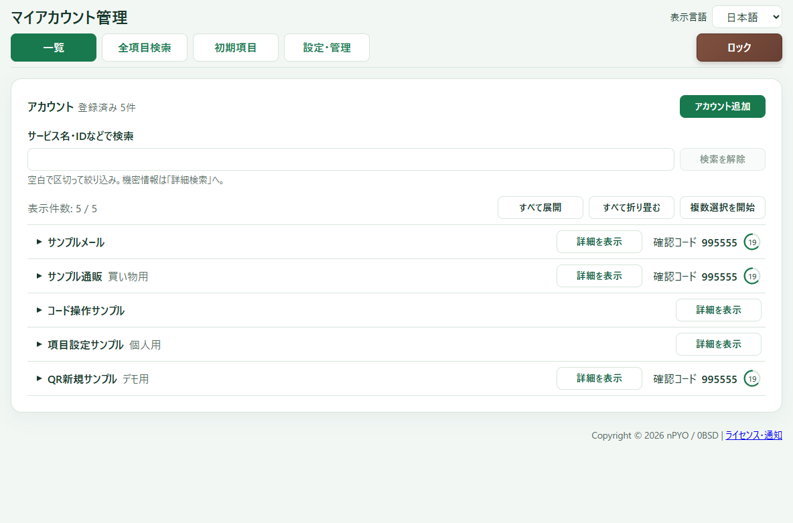
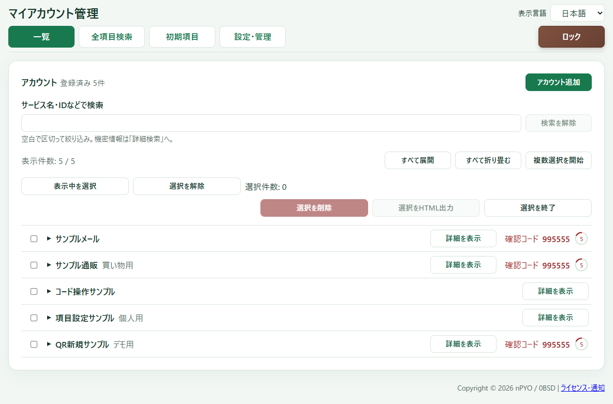
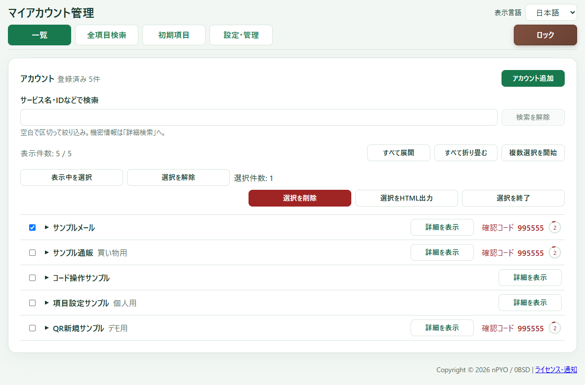
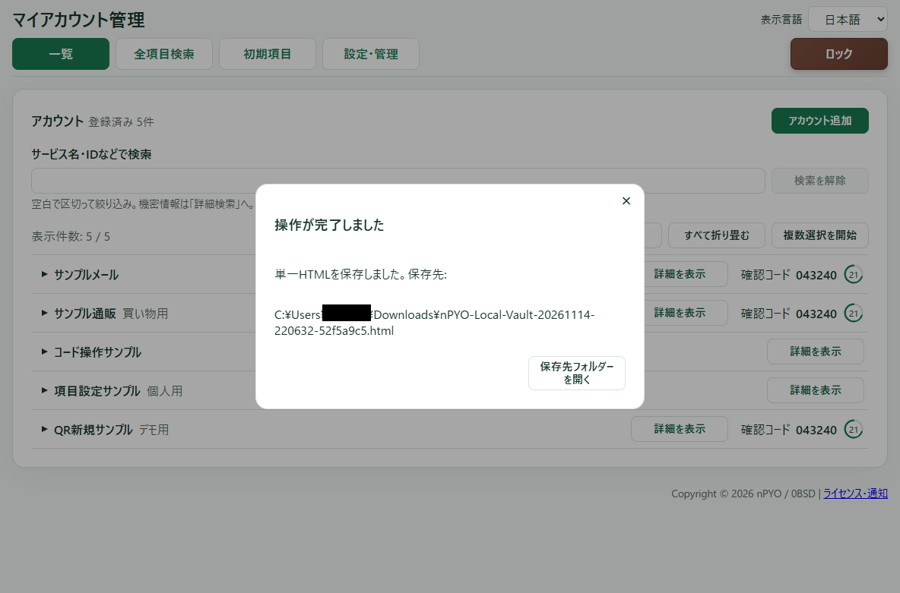
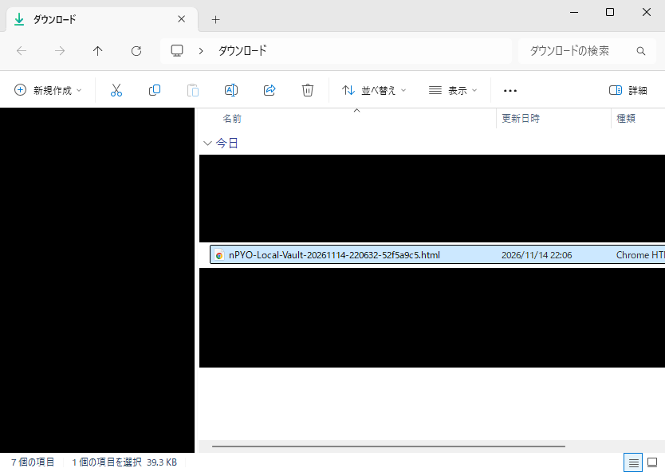
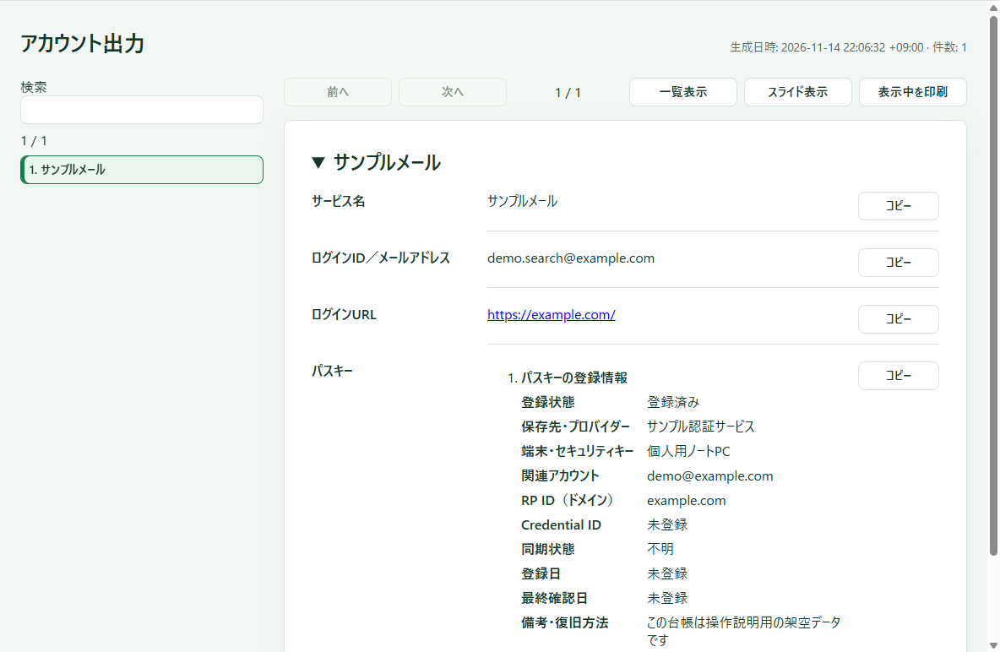

42選択したアカウントをHTML出力
一覧で選んだアカウントだけをHTMLへ出力します。例では5件のうち1件を選びます。
1一覧で選択を始める
［複数選択を開始］を押します。

2出力するアカウントを選ぶ
対象行のチェックボックスをオンにします。

3選択件数を確かめて出力する
対象と選択件数を確認し、［選択をHTML出力］を押します。確認ダイアログなしで保存されます。

4出力完了を確認する
保存されたファイル名を確認し、［保存先フォルダーを開く］を押します。選択モードは終了しています。

5生成ファイルを開く
完了通知と同じファイル名のHTMLを開きます。

6選んだ件数だけか確認する
ブラウザーの件数と目次を確認します。この例はサンプルメール1件だけです。
